Entregable 4 · CE024 — Calidad y Operación
Calidad, Operación y Evolución del Sistema
Estrategia de pruebas, 12 casos de prueba ejecutados, pipeline CI/CD, 6 incidencias técnicas resueltas, auditoría técnica interna y plan de mejora en 3 ciclos.
Estado general: FUNCIONAL CON DEUDA TÉCNICA CONTROLADA.
13/13 casos de prueba aprobados · 6 incidencias resueltas · Desplegado en producción.
13/13
Pruebas aprobadas
6
Incidencias resueltas
7/10
Seguridad (auditoría)
9/10
Confiabilidad
1. Pruebas — Casos de Prueba
Estrategia de pruebas manuales sistematizadas sobre el entorno de producción real (cPanel). Cada flujo crítico tiene entradas, salida esperada y resultado obtenido.
| ID | Descripción | Flujo/RN | Estado |
|---|---|---|---|
| CP-01 | Reconocimiento puntual | RF-01, RF-02 | APROBADO |
| CP-02 | Reconocimiento con tardanza (15 min) | RF-01, RF-02 | APROBADO |
| CP-03 | Intento de registro duplicado ignorado | RN-01 | APROBADO |
| CP-04 | Registro fuera del horario de corte | RN-02 | APROBADO |
| CP-05 | Persona desconocida no registrada | RF-01 | APROBADO |
| CP-06 | Sync offline — registro sin internet | RF-04, HU-05 | APROBADO |
| CP-07 | Sync offline no sobreescribe registro online | RN-03, DA-05 | APROBADO |
| CP-08 | Reporte por día incluye docentes ausentes | RF-07, RN-07 | APROBADO |
| CP-09 | Exportación a Excel con colores | RF-07 | APROBADO |
| CP-10 | Notificación push a padre (<30 seg) | RF-05, HU-02 | APROBADO |
| CP-11 | Cambio de cámara frontal/trasera | RF-10, HU-01 | APROBADO |
| CP-12 | Foto panorámica guardada como evidencia | RF-12 | APROBADO |
| PLV-05 | minutos_tarde >127 (SMALLINT overflow fix) | INC-004 | APROBADO |
| PLV-01 | Confianza exactamente en umbral (55.0%) | RN-05 | PENDIENTE |
| PLV-02 | Confianza justo bajo umbral (54.9%) | RN-05 | PENDIENTE |
| PLV-03 | Tardanza de exactamente 0 minutos | RF-02 | PENDIENTE |
| PLV-04 | Tardanza de 1 minuto | RF-02 | PENDIENTE |
1.2 Evidencias Fotográficas — Casos de Prueba
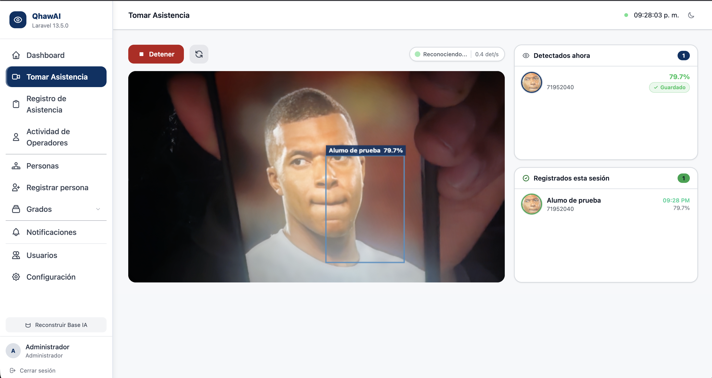
CP-01 — Reconocimiento puntual: badge Puntual visible, panel de sesión actualizado

CP-02 — Reconocimiento con tardanza: badge Tardanza y minutos de retraso

CP-03 — Intento duplicado: segundo reconocimiento ignorado sin nuevo registro
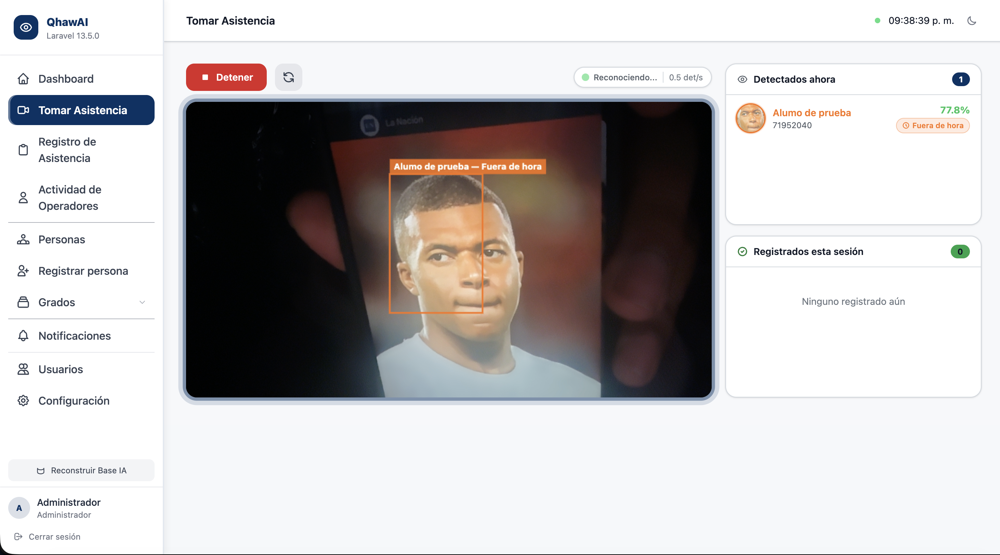
CP-04 — Fuera de horario de corte: overlay naranja, sin registro en BD
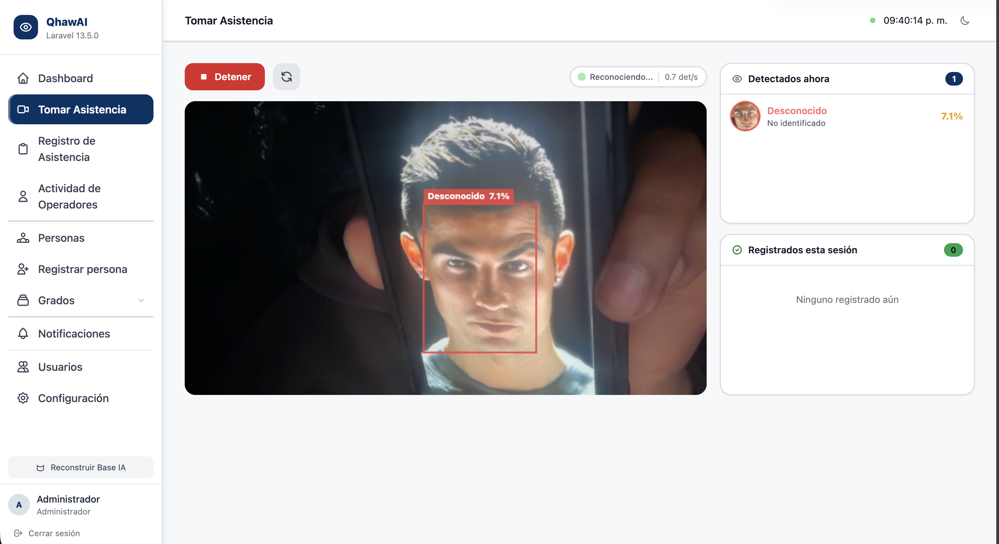
CP-05 — Persona desconocida: rectángulo rojo, sin nombre ni registro
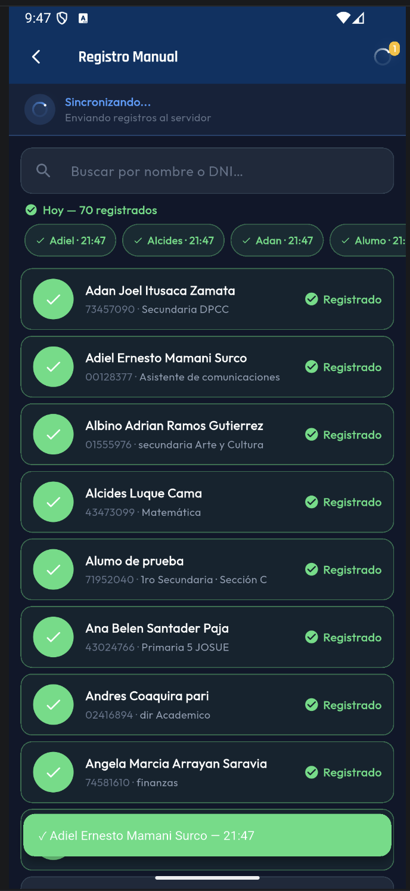
CP-06 — Sync offline: app móvil con registros pendientes de sincronización

CP-07 — Offline no sobreescribe: MySQL conserva el registro original con foto facial
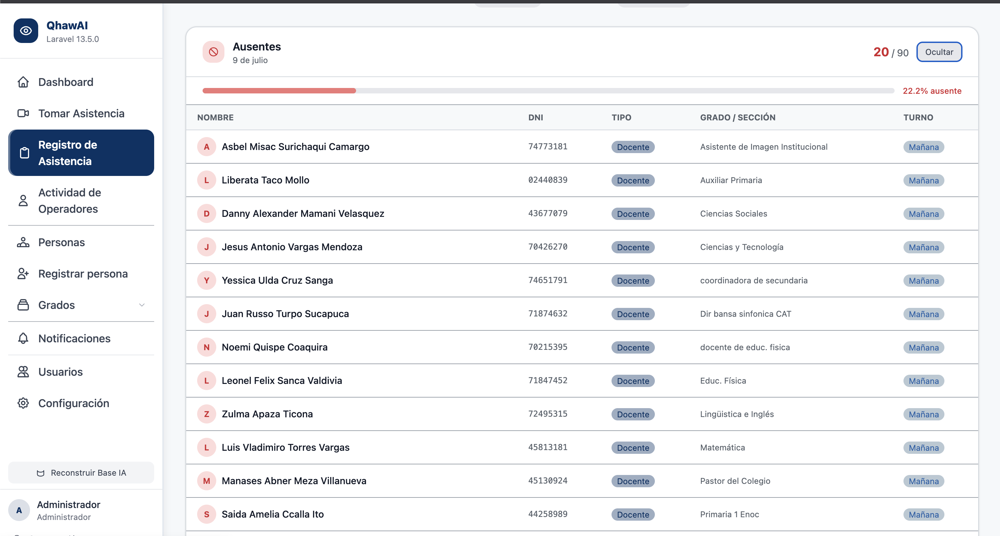
CP-08 — Reporte incluye docentes: columna de faltas con docentes ausentres

CP-09 — Excel con colores: filas rojas para Falta, blancas para Asistencia
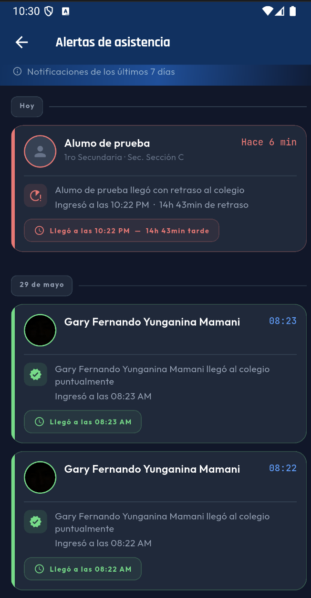
CP-10 — Notificación push al padre: celular con notificación en menos de 30 segundos
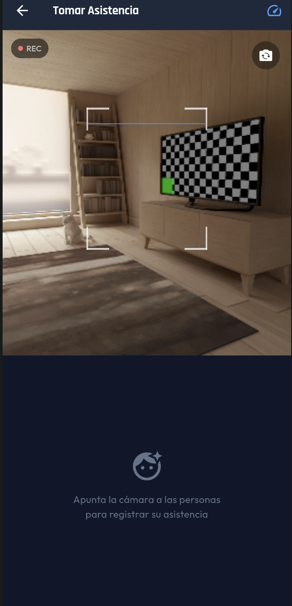
CP-11 — Cambio de cámara: botón de flip visible, cambio frontal/trasera operativo
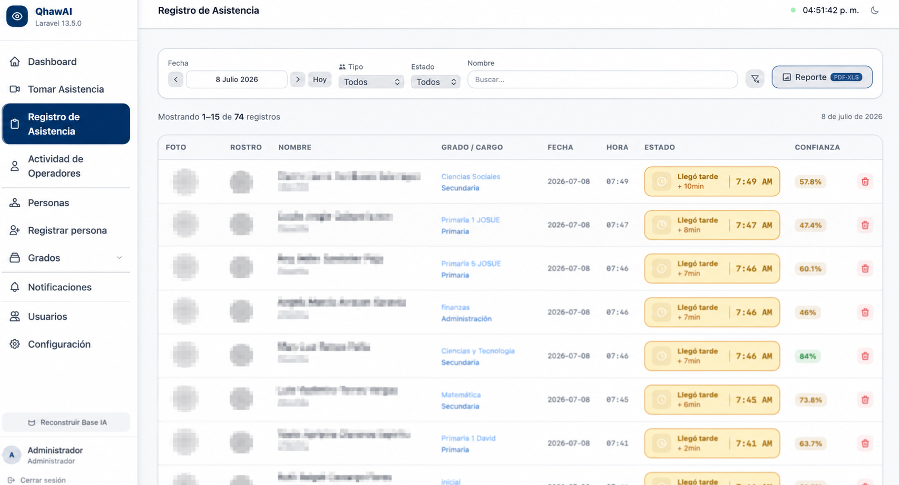
CP-12 — Foto panorámica: columna full_frame_path con imagen en historial

PLV-01 — Umbral exacto 55.0%: confianza en límite acepta el registro

PLV-02 — Bajo umbral 54.9%: confianza insuficiente, registro ignorado

PLV-03 — Segundo intento bloqueado: RN-01 respetada

PLV-04 — Fuera de hora: overlay naranja, INC-003 corregida

PLV-05 — minutos_tarde > 127: SMALLINT overflow corregido (INC-004)

Evidencia adicional de verificación en entorno de producción
2. Integración y Despliegue Continuo
🔄 GitHub Actions
Pipeline configurado en
.github/workflows/ci.yml. Se activa con cada push a main o pull request.🚀 Jobs
laravel-tests: PHP 8.3, Composer install, key:generate, php artisan test
python-tests: Python 3.11, pip install, pytest tests/ -v
python-tests: Python 3.11, pip install, pytest tests/ -v
YAML — .github/workflows/ci.yml
name: QhawAI CI
on:
push:
branches: [main]
pull_request:
branches: [main]
jobs:
laravel-tests:
runs-on: ubuntu-latest
steps:
- uses: actions/checkout@v4
- name: Setup PHP
uses: shivammathur/setup-php@v2
with:
php-version: '8.3'
extensions: pdo, pdo_mysql, mbstring
- name: Install dependencies
run: composer install --no-dev
- name: Copy .env
run: cp .env.example .env
- name: Generate key
run: php artisan key:generate
- name: Run tests
run: php artisan test
python-tests:
runs-on: ubuntu-latest
steps:
- uses: actions/checkout@v4
- name: Setup Python
uses: actions/setup-python@v4
with:
python-version: '3.11'
- name: Install dependencies
run: pip install -r requirements.txt
- name: Run tests
run: pytest tests/ -v
Evidencias del Pipeline
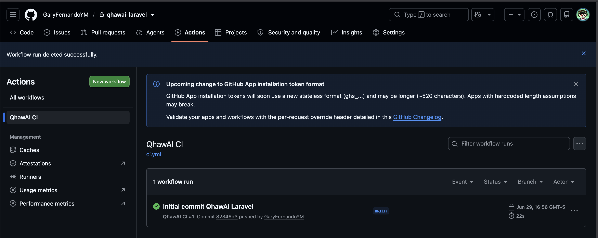
GitHub Actions — panel de workflows del repositorio
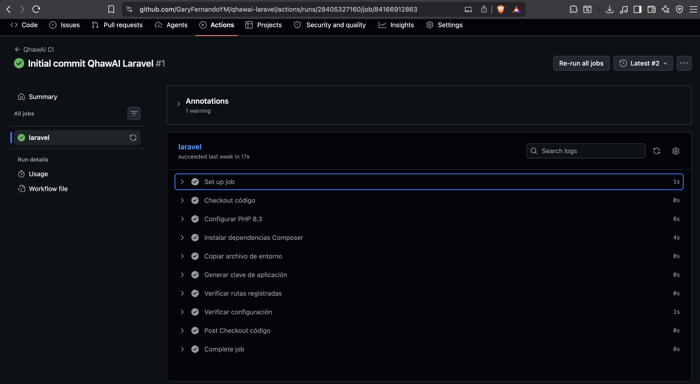
Run exitoso — todos los checks en verde
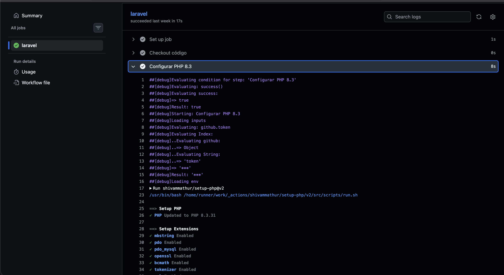
Detalle de un run — cada step completado (checkout, setup PHP, install, test)

Archivo .github/workflows/ci.yml en el repositorio de GitHub
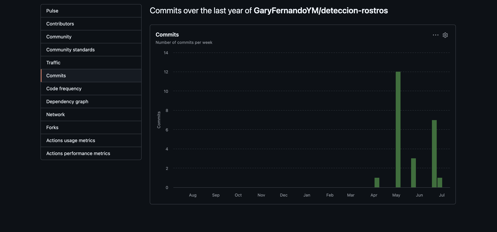
Historial de commits en GitHub — últimos cambios del proyecto

storage/logs/laravel.log — sin errores críticos en producción
Proceso de despliegue manual (cPanel)
- 1Preparación local:
git add→git commit -m "descripción"→git push origin main - 2Actualización servidor (SSH):
git pull origin main→composer install→php artisan config:cache - 3Migraciones pendientes: phpMyAdmin → SQL → ejecutar
ALTER TABLEmanualmente - 4Verificación post-deploy: abrir login → tomar asistencia de prueba → revisar
storage/logs/laravel.log
3. Gestión de Incidencias
INC-001
Severidad: Media
RESUELTO
Botón de cambio de cámara no aparece en dispositivos móviles
enumerateDevices() se ejecutaba antes de que el usuario concediera permiso de cámara. En móviles, sin permiso previo, la API retorna 0 dispositivos.resources/views/attendance/index.blade.php
Solución: Mover la llamada a
_checkMultipleCameras() para que se ejecute después de que getUserMedia() resuelva exitosamente.
INC-002
Severidad: Alta
RESUELTO
Tardanza siempre se calculaba como 0 en sync offline
syncOffline() no calculaba tardanza; asignaba hardcodeado false/0.app/Http/Controllers/Api/MobileDataController.php
Solución: Implementar
calcularTardanza($hora, $turno) que consulta Configuracion::current() — la misma fuente que usa la API Python.
INC-003
Severidad: Alta
RESUELTO
minutos_tarde devolvía valores negativos
El orden de parámetros en
diffInMinutes() era incorrecto: $llegada->diffInMinutes($limite) da negativo cuando llegada > límite.app/Http/Controllers/Api/MobileDataController.php
Solución: Invertir el orden:
$limite->diffInMinutes($llegada) retorna positivo cuando llegada es posterior al límite.
INC-004
Severidad: Alta
RESUELTO
Error 500 al sincronizar personas muy tarde (>127 minutos)
La columna
minutos_tarde era TINYINT (máximo 127). Valores de 128+ causaban desbordamiento en MySQL.Migración
2026_06_28_000002_change_minutos_tarde.php
Solución: Migración de
TINYINT a SMALLINT UNSIGNED (máximo 65,535). ALTER TABLE asistencia MODIFY COLUMN minutos_tarde SMALLINT UNSIGNED NOT NULL DEFAULT 0;
INC-005
Severidad: Media
RESUELTO
Docentes ausentes no aparecían en reporte "por día"
El scope global
$personaScope siempre calculaba Persona::estudiantes() cuando $subtipo era null, excluyendo docentes.app/Http/Controllers/AttendanceController.php
Solución: Crear
$scopeDia local que usa Persona::query() (todos los tipos) cuando no hay filtro de subtipo.
INC-006
Severidad: Alta
RESUELTO
Registros offline sobreescribían asistencias con foto facial
updateOrCreate en syncOffline() actualizaba el registro existente aunque ya tuviera datos de mayor calidad (foto, confianza).app/Http/Controllers/Api/MobileDataController.php
Solución: Cambiar
updateOrCreate por firstOrCreate: si ya existe un registro para ese DNI y esa fecha, se conserva el original sin modificar.
4. Auditoría Técnica Interna
Seguridad
7/10 — Riesgo residual en biometría (sin cifrado en disco)
Confiabilidad
9/10 — Anti-duplicados, offline, manejo de errores
Mantenibilidad
6/10 — Buena arquitectura, sin pruebas automáticas
Rendimiento
8/10 — Background threads, índices, Singleton IA
| Criterio | Estado | Observación |
|---|---|---|
| Autenticación / Autorización | CUMPLIDO | Middleware en todas las rutas |
| SQL Injection | CUMPLIDO | Eloquent ORM + PDO prepared statements |
| Contraseñas | CUMPLIDO | bcrypt factor 12 |
| Datos biométricos | PARCIAL | Sin cifrado en disco para embeddings .pkl |
| URLs internas expuestas | CUMPLIDO | Python solo accesible por /img-proxy |
| Variables de entorno | CUMPLIDO | .env excluido de git |
| CSRF | CUMPLIDO | Middleware VerifyCsrfToken de Laravel |
| Anti-duplicados | CUMPLIDO | Dos niveles: memoria Python + UNIQUE KEY BD |
| Modo offline | CUMPLIDO | firstOrCreate preserva registro de mayor calidad |
| Separación de capas | CUMPLIDO | MVC + Service Layer + microservicio |
| Control de versiones BD | CUMPLIDO | Migraciones de Laravel |
| Pruebas automatizadas | AUSENTE | DT-01 en plan de mejora |
| Rate limiting en login | AUSENTE | DT en plan de mejora (M-02) |
| Análisis estático código | AUSENTE | DT-07 · PHPStan + Pylint propuestos |
3.4 Control de Deuda Técnica
Deuda Crítica
DT-01
Sin suite de pruebas automatizadas. Riesgo de regresiones no detectadas. 8–12 horas de esfuerzo.
DT-02
Sin pipeline CI/CD funcional. Despliegues manuales, lentos y propensos a error. 4–6 horas de esfuerzo.
DT-03
Migración de reportes "por día" pendiente en producción (INC-005). 30 minutos para aplicar en cPanel.
Deuda Media
DT-04
Rol "operator" sin implementar completamente. Operadores tienen más acceso del necesario.
DT-05
Sin paginación en historial de asistencias a largo plazo. Posible degradación con miles de registros.
DT-06
Logs del servidor Python sin rotación configurada. Los archivos crecen indefinidamente.
4.4 Plan de Mejora y Evolución
Ciclo 1 — Corto plazo
1 mes
1 mes
- M-01: Aplicar corrección INC-005 en producción
- M-02: Rate limiting en login (ThrottleRequests)
- M-03: Pruebas PHPUnit para CP-01 al CP-05
Ciclo 2 — Mediano plazo
3 meses
3 meses
- M-04: Configurar pipeline GitHub Actions
- M-05: Implementar rol operator correctamente
- M-06: Paginación en historial de asistencias
- M-07: Rotación de logs Python
- M-08: Análisis estático (PHPStan + Pylint)
Ciclo 3 — Largo plazo
6 meses
6 meses
- M-09: Dashboard con gráficos Chart.js
- M-10: Exportación de reportes programada (email)
- M-11: Reconocimiento multi-rostro en paralelo
- M-12: Aplicación web progresiva (PWA)
3.3 Métricas del Sistema
Métricas estructurales
~3,500 LOC PHP (Laravel)
~1,200 LOC Python
~800 LOC JavaScript
9 tablas principales en BD
12 endpoints API REST (móvil)
8 endpoints FastAPI (Python)
~20 vistas Blade
8 modelos Eloquent
14 controladores Laravel
~1,200 LOC Python
~800 LOC JavaScript
9 tablas principales en BD
12 endpoints API REST (móvil)
8 endpoints FastAPI (Python)
~20 vistas Blade
8 modelos Eloquent
14 controladores Laravel
Métricas de rendimiento
Detección YOLO-Face: ~50–100ms
Reconocimiento ArcFace: ~200–400ms
Tiempo total por frame: ~300–600ms
Tiempo total con red: ~800–1,500ms
Almacenamiento estimado (1000 personas/año):
Frames panorámicos (~45KB): ~4.4 GB
Recortes de rostro (~15KB): ~1.5 GB
MySQL (registros): ~100 MB
Total: ~6 GB/año
Reconocimiento ArcFace: ~200–400ms
Tiempo total por frame: ~300–600ms
Tiempo total con red: ~800–1,500ms
Almacenamiento estimado (1000 personas/año):
Frames panorámicos (~45KB): ~4.4 GB
Recortes de rostro (~15KB): ~1.5 GB
MySQL (registros): ~100 MB
Total: ~6 GB/año